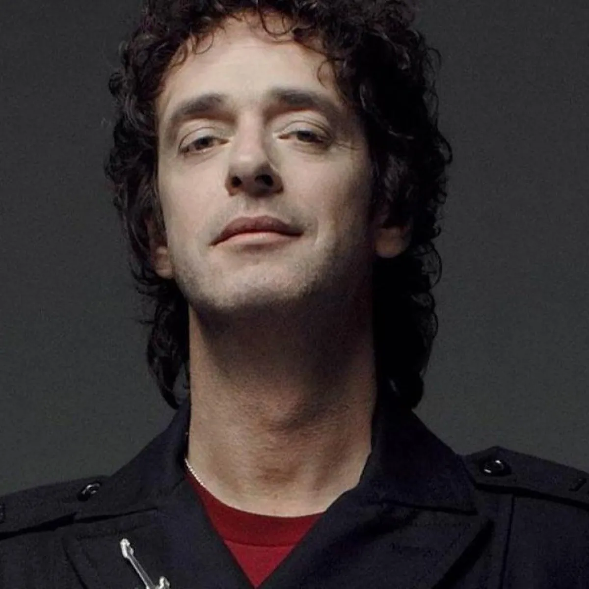
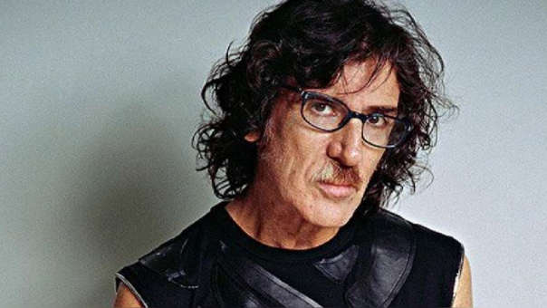

Rock Nacional
-
Gustavo Cerati
Gustavo Adrián Cerati fue un cantante, músico, cantautor, actor, compositor y productor discográfico argentino que obtuvo reconocimiento internacional por haber sido el líder de la banda de rock Soda Stereo. Es considerado uno de los músicos más importantes, populares e influyentes del rock latinoamericano.
Ver mas -
Fito Paez

Rodolfo Páez es un cantautor, compositor, músico y director de cine argentino, integrante de la llamada trova rosarina, es apodado como El trovador del rock argentino y uno de los más importantes exponentes del rock argentino.
Ver mas -
Charly García
Carlos Alberto García es un cantautor, compositor, músico y productor argentino de rock, considerado uno de los compositores más importantes de Latinoamérica y de la historia de la música popular en español.
Ver mas